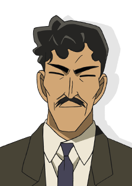

| 主角 |
| 江户川柯南
外表看似小孩，其真实身份是高中生侦探——工藤新一。
和青梅竹马的同学毛利兰一起去游乐园玩，目击到黑衣男子的可疑交易现场，被灌下开发中的药物，变成了小学生的身体。那天以后，为了隐藏真实身份，化名江户川柯南，
在青梅竹马的毛利兰家寄住的同时，日复一日解决了许多案件。一切都是为了恢复自己的身体。
|
|
| 工藤新一
崇拜夏洛克·福尔摩斯的高中生侦探。5月4日出生，17岁。帝丹高中2年级B班。还是高中1年级学生的时候，在去往洛杉矶的飞机上解决了杀人案，在那里和目暮警官等人相识。
此后，作为高中生侦探活跃起来。特长是足球，头脑清醒出众
|
|
| 关系密切的人物 |
| 毛利兰
新一的青梅竹马，帝丹高中2年级B班，空手道部女主将，都大会中有头号实力的文武双全的女生。一直喜欢着新一，在他突然消失后等待着他的归来。有时柯南的名推理会与新一的身影重叠，
她开始像母亲一般温柔地照顾着柯南和少年侦探团。此外，和铃木园子是青梅竹马的挚友，从以前开始便无话不谈。
|
|
| 毛利小五郎
小兰的父亲，前警视厅搜查一课刑警，与目暮警部是故交。现在在毛利侦探事务所营业，多亏了柯南的名推理，以“沉睡的小五郎”闻名。经过小兰的拼命努力，经常与分居中的妻子——妃英理见面，
有好色的一面妨碍着，很难坦率地重修旧好。
|
|
| 阿笠博士
住在新一隔壁的古怪发明家。知道柯南真实身份的少数人物之一。是发明了领结型变声器、脚力增强鞋、侦探徽章和足球射出腰带等许多侦探产品的理解者，也照料着少年侦探团。
在灰原哀逃离组织之后保护着她。
|
|
| 少年侦探团
柯南在帝丹小学的同学，由吉田步美、小岛元太、圆谷光彦组成。
柯南与他们一起破获了很多案件。
|
|
| 灰原哀
外表是小孩，但其实是黑衣组织的一员，新一被灌下的毒药（APTX4869）的开发者，代号雪莉。姐姐被杀，背叛了组织，为了逃脱而服下了药物，变成小学生的样子。
现在藏在阿笠博士家，和柯南一起在帝丹小学上学，另一边研究着解药。柯南是这世上唯一能与她分享相同境遇的对象。
|
|
| 服部平次
关西高中生侦探。推理能力不在同龄的新一之下。父亲服部平藏是大阪府警本部部长。这多亏了从小时候就混熟了的大泷警官那里，偷偷求教的调查情报的方法。
此外，黝黑的皮肤是爷爷辈的隔代遗传。知道柯南的身份是新一的少数人之一。与柯南一起解决了诸多疑难案件。
|
|
| 铃木园子
小兰的同学兼挚友。和工藤新一也是同学。铃木财团的大小姐，喜欢流行的事物与品牌。好奇心强，跟小五郎很合得来，完全没有大小姐架子。与京极真是恋人关系。
|
|
| 世良真纯
转学到小兰班级的女高中生侦探。似乎和小兰与新一在过去见过面，详细情况不明。有两个哥哥，大哥是赤井秀一。喜欢用的摩托车是雅马哈 XT400E Artesia。
现在住在酒店里，和神秘少女一同生活。
|
|
| 京极真
绰号“蹴击贵公子”。杯户高中空手道部主将，与园子是恋人关系。在外国进行武士修行，若园子出了什么事，会弃赛回国。拥有传统的价值观念，在园子穿露出肌肤的服装或短裙时会进行提醒。
|
|
| 羽田秀吉
达成四冠的将棋名人。因为名字像羽柴秀吉，所以被称为“太阁名人”。发自内心喜欢前女友交通课美女警官宫本由美。
|
|
| 远山和叶
平次青梅竹马的女朋友。父亲是大阪府警刑事部长。坦率体贴，拥有细腻的心。宣称担任平次姐姐的角色，其实发自内心喜欢平次。此外，两个人在幼年玩的时候被手铐困住，
其间是连洗澡上厕所也在一起的孽缘。当时的锁的碎片，总是携带在和平次成双成对的护身符里，而这个护身符拯救了平次的危机。
|
|
| 怪盗基德
变装达人。轰动世界的神出鬼没的怪盗。因其国际犯罪者编号而被称作怪盗1412号，总是会送上预告函，将警察玩弄于股掌之间，因偷盗成功的华丽伎俩，被世人称作“怪盗基德”。
实际上现在的基德是第二代，真实身份是高中生黑羽快斗。他为了探求亡父的死因，继承了怪盗基德的身份。快斗的脸和新一一模一样。
|
|
| 妃英理
毛利小五郎的妻子，也是毛利兰的母亲。但从10年前起就在分居中。推理力、判断力都无可挑剔的女律师。有“司法界的女王”的别称。
柯南对她有独特的恐惧感，她对柯南的观察力、推理力、知识量有正面的评价。拥有看穿真相的眼光，信念不随感情而动摇。
|
|
| 工藤优作
新一的父亲。世界知名推理小说家，拥有在新一以上的头脑和推理力的唯一人物。新一至今仍未有超越优作的推理。头脑清晰，也喜欢吓新一一跳的恶作剧。现在和妻子有希子住在美国。
|
|
| 工藤有希子
新一的母亲，前人气女演员，和优作结婚的同时隐退。担心独自面对黑衣男子的新一的同时，偶尔也会回国以乐观的形象出现在新一面前支持着他。
|
|
| 警视厅人物 |
| 目暮十三
搜查一课强行犯三系的警部。也是小五郎刑警时期的上司。顺带一提，一直都带着帽子，是为了隐藏过去案件中负的伤。
|
|
| 高木涉
警视厅搜查一课强行犯三系的刑警。
目暮警部的部下。冒失的性格，有时会出现大失误，也有时会被卷入案件核心。与在职场备受欢迎的佐藤刑警恋爱进行中，可总是被打搅。
|
|
| 千叶和伸
警视厅形警部搜查一课强行犯三系的刑警。目暮警部的部下，高木刑警的后辈。特摄发烧友。如其外表一样，是个宁要饱食不要美色的人。
|
|
| 白鸟任三郎
警视厅搜查一课强行犯三系的职业组警部。以精英的身份为傲，冷静沉着，严谨认真的性格，受旁人信赖。
|
|
| 佐藤美和子
警视厅搜查一课强行犯三系的刑警。
目暮警部的部下，优秀的刑警。从思念的人殉职的过去的案件中走了出来，现在正和高木刑警职场恋爱进行中。
|
|
| 宫本由美
警视厅交通部交通课的女警。和佐藤刑警是挚友关系。对高木和佐藤的恋爱，有时是支持，有时则是捣乱。虽然曾和羽田秀吉有恋爱关系，但还不知道他的职业就分手了……
|
 |
| 三池苗子
从杯户署调到警视厅交通部交通课的女警。与同课的由美一同行动。和千叶刑警是帝丹小学的同学，现在也对千叶抱有好感……[
|
|
| 松本清长
警视厅刑警部搜查一课强行犯搜查三系的警视。事务工作专门管理官，目暮警部的上司。女儿是帝丹中学音乐教师松本小百合。
|
|
| 萩原研二
原警视厅警备部机动队队员。爆炸物处理班成员。7年前在拆弹中殉职。与松田刑警是挚友关系。
|
|
| 松田阵平
原警视厅刑警部搜查一课强行犯三系。3年前被分配到警视厅搜查一课。和佐藤刑警是两情相悦的关系。调来一周后为了保护人们远离炸弹犯安装在摩天轮中的爆炸物而殉职。
|
|
| 中森银三
警视厅刑警部搜查二课智能犯搜查系的警部。出众的刑警风采总觉得和与小五郎相似，但和小五郎水火不容。虽然燃烧着逮捕基德的执念，却总被基德敷衍过去而无法逮捕。
拥有作为智能犯系警官优秀的头脑。
|
 |
| 服部平藏
大阪府警本部部长。平次的父亲。其洞察力连平次也无法与之匹敌。外表强势，但面对妻子静华时却抬不起头来。
|
 |
| 远山银司郎
大阪府警刑警部部长，警视长。和叶的父亲。和平藏是发小兼好友，是寄予了极大信任的左右手。
|
|
| 大泷悟郎
大阪府警本部搜查一课强行犯搜查系的警部。远山刑警部长的部下，和服部平次关系亲密。总是因平次的任性胡来而担心。由于被拜托就无法拒绝的性格，经常泄露给平次情报。
|
|
| 山村操
群马县警的警部。是新一的母亲、女演员藤峰有希子的忠实粉丝，因她主演的刑侦剧而成为刑警的笨蛋警官。洞察力和推理力是让人怀疑他是怎么当上刑警的不可思议的水平。仰慕小五郎。
|
|
| 横沟重悟
神奈川县警搜查一课警部，双胞胎哥哥横沟参悟是静冈县警搜查一课警部。多次碰见小五郎，与哥哥不同，重悟称其“烟鬼小五郎”，觉得他很可疑。
|
|
| 横沟参悟
静冈县警警部。最初隶属于埼玉县警，后来调动至静冈县警。优秀的公务员，推理能力也很优秀。和弟弟重悟不同，他很尊重小五郎
|
|
| 服部静华
服部平藏的妻子，平次的母亲。爱穿和服皮肤白皙的京都美人，剑道高手。对平次来说，有着作为家长笨拙的一面，拍摄了平次的成长视频。
|
|
| FBI人物 |
| 詹姆斯·布莱克
FBI调查官。茱蒂和赤井的上司。居住于芝加哥。稳重而不会因小事动摇的性格。对过去柯南在自己来到日本的时候解救了自己深感敬佩。爱车是梅赛德斯-奔驰CLK。
|
|
| 茱蒂·斯泰琳
FBI调查官。28岁。手枪枪法为上等。着迷于日本街机游戏。因20年前父亲被贝尔摩得杀害而加入FBI。来日本时使用“茱蒂·圣提米利翁”的假名，担当帝丹高中不寻常的英语教师，以潜入调查。
|
|
| 安德雷·卡迈尔
FBI调查官。强壮的大块头外表，实际上是有着纤细性格的人。有异于常人的驾驶技术，有时会以身体作为盾牌，保护柯南等人。
|
|
| 冲矢昴
东京大学工学部的大学生，寄住在工藤家的神秘人物。常穿着带领子的衣服遮住脖子。爱车是斯巴鲁360。他的真实身份是……
|
|
| 赤井秀一
FBI调查官。戴黑色针织帽，叼着香烟，特征是左撇子。和他的同伴追踪着黑衣组织的贝尔摩得。冷静的推理能力和调查手段经常能与柯南匹敌。也作为优秀的狙击手活跃着。
|
|
| 黑衣组织的卧底成员 |
| 水无怜奈
作为日卖电视台的人气主播，隐藏着真正的身份。是潜入了黑衣组织的CIA谍报员。
|
|
| 安室透
被小五郎收为弟子，在事务所楼下的波洛咖啡厅打工的店员。自称黑衣组织的“波本”，擅长收集情报，拥有“降谷零”这个名字……其真实身份是……
|
 |
| 黑衣组织的主要成员 |
| 琴酒
给柯南（工藤新一）灌下开发中药物的罪魁祸首。黑衣组织成员之一，与首领（那位大人）直接联络的干部级别的人物。性格极其冷酷，拥有敏锐的观察力、洞察力，毫不留情地排除妨碍组织的人物。
爱车是保时捷356A。
|
|
| 伏特加
在黑衣组织中作为实际行动部队，主要负责潜入调查。琴酒的部下，与其一同行动。是对组织的恐怖有着切身体会的一个人，其忠心不改。必要之时，会展现彻底的冷酷。
|
|
| 贝尔摩得
黑衣组织的首领特别关照的直属部下。擅长变装，为了搜索雪莉变装成过各种各样的人物。看穿了柯南和灰原的真实身份，可不知为何这件事却对组织保密。
|
|
| 基安蒂
组织中干练的狙击手之一。展现着好战且性急的一面。与贝尔摩得不合。
|
|
| 科恩
与基安蒂同为组织狙击手。寡言且冷静。展现着默默进行杀人的冷酷的一面。与基安蒂一样讨厌贝尔摩得。
|
|
| 返回首页 |